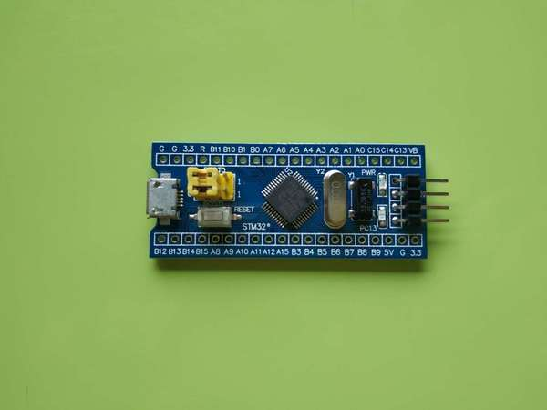
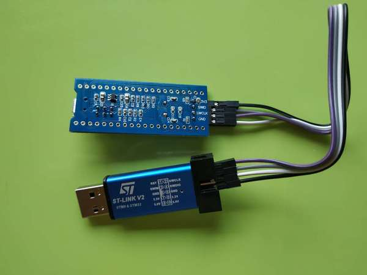

Bluepill: a GCC/CMake build environment ..
Table of Contents
Intro
In this guide we will setup a simple minimal blinky for the Bluepill: A very cheap board available from China with the STM32F103C8T6 chip on it. They cost a smidge over one dollar each

I will have two versions - one using the CMSIS and one using the LL (explained below). The embedded community seems a bit allergic to CMake - but I'm quite allergic to Make, so hopefully this guide will provide something new.
starting our CMake file we write out the usual
cmake_minimum_required(VERSION 3.0) project(blinky)
The blessed way of building things for the STM32 series chips is using their wizards - but it's possible to get the whole thing running just using GCC and OpenOCD - and that's what we're gunna try to get working by the end of this guide. People have ofcourse already done this before:
Prior Art
dwelch67has some great extremely minimal setups for the blue pilll on his github. He describes them extensively in a few places on Stack Overflow. Basically here he rolls his own .. everything. It's very greybeard. All the code is in your face - no libraries. Straight writting to registers. Definitely take a look!PurpleAlienhas another setup - which is very close to what I'm doing. He described it on his website and the code is on the his github. It's a slightly different chip - but the steps should work almost identically for thebluepill.satoshinmhas a wonderful guide where he guides you through all the challenges he had setting up his bluepill. It's long but very informative and I recommend reading it. He also has an accompanying repository where we has code for the blinky working using bare metal, the STM HAL and another 3rd party library. His code (the bare metal part especially) was absolutely invaluable for getting my setup up and running. Check out his github project.
Anatomy of a build
The Linker Script
When an application normally runs on a desktop machine it's generally running using virtual memory in a virtual application-specific address space. From the applications point of view it can manipulate it's own memory however it wants - and it's the operating system that then translates that into safe operations on the actually memory (for instance to insure that the applications doesn't touch any memory region it shouldn't)
On a simple microcontroller there is no operating system to manage the memory, and the memory is shared with other functionality - some addresses are reserved for peripherals, other addresses are for interrupts and reset bits, the stack and heap are allocated some device-specific place and there is also a split between ROM and RAM.
Because of these new limitations we can't just start executing code at address zero or drop in a main() functions somewhere randomly and start there, we need to tell the linker what the code layout is though a custom linker script. First we tell it which parts are ROM and RAM with their respective sizes. ROM (Read Only Memory) is where the code and constants live, and RAM (Random Access Memory) is where the stack and heap live - the stuff that's dynamic
MEMORY
{
rom (rx) : ORIGIN = 0x08000000, LENGTH = 64K
ram (rwx) : ORIGIN = 0x20000000, LENGTH = 20K
}
PROVIDE(_stack = ORIGIN(ram) + LENGTH(ram));
Even give that, code on a microcontroller doesn't by default start at the first address of ROM and go from there (that's more or less how we conceptualize code running on an normal OS). A better way to think about the microcontroller is it's as a machine that recieves interrupt signals from external inputs and the chip responding by running code and then returning to whatever it was doing before. These interrupting inputs can be a clock running out, a peripheral wanting attention, an attached debugger wanting a halt, etc.
So instead of a main() or something, the first thing in ROM is a vector table - a table of pointers to the different interrupt handlers - ie. the code that is run when each interrupt happens. So we need to tell the linker that there will be a vector table
EXTERN(vector_table);
Here vector_table is not a special keyword, it's just a label we are giving to the linker. It's written as EXTERN, meaning it has the label name now, but it'll look for its definition in our code, so we need to not forget to define this later on!
The first interrupt handler in this table will be special and it's the one that is triggered when the system is powered on, the user presses the reset button, or the code runs out of things to do. It's appropriately called the reset handeler
We also tell the linker that the code should start at the reset handler. Though as we'll see in the next section, this isn't stictly necessary because the reset handler is always the first interrupt handler in the vector table - so the microcontroller will know where to look for it by default.
ENTRY(reset_handler);
Again, this is just a symbol and the linker will look for its value in our code during linking.
Lastly we need to tell the linker that we want those vectors first in the ROM and aligned at the byte level (b/c the micro reads things in byte sized chucks - haha)
SECTIONS
{
.text : {
*(.vectors)
*(.text*)
. = ALIGN(4);
} >rom
}
So the chip doesn't need to hunt for the vector table. It's always in the same spot - and the reset handler is as well.
The Startup File (WIP)
The next part is to actually write the reset handler and to define the vector tables we just talked about and that the linker is expecting from us! The vector table will be set to some default values (and can be changed later) and we'll write the reset handler in a generic way that we can reuse between project. It will do some generic initializations and then at the end call to main(). Then when we start a new project we can simply start writing a main() and skip all this initializations. In so doing we've split off these initializations into a separate startup file that we will reuse across projects.
Note: There is nothing special about this file for the compiler or linker - it's just another code file - and you are free to copy it over to your other code files if you want!
int main(void); void __attribute__ ((weak, naked)) reset_handler(void) { (*(volatile unsigned int *)(0x40021018)) |= (1 << 4); (*(volatile unsigned int *)(0x40011004)) |= (0x00 << (((13 - 8) * 4) + 2)); (*(volatile unsigned int *)(0x40011004)) |= (0x02 << ((13 - 8) * 4)); main(); } void blocking_handler(void) { while (1); } void null_handler(void) {} extern unsigned _stack; __attribute__ ((section(".vectors"))) struct { unsigned int *initial_sp_value; void (*reset)(void); void (*nmi)(void); void (*hard_fault)(void); void (*memory_manage_fault)(void); void (*bus_fault)(void); void (*usage_fault)(void); void (*reserved_x001c[4])(void); void (*sv_call)(void); void (*debug_monitor)(void); void (*reserved_x0034)(void); void (*pend_sv)(void); void (*systick)(void); void (*irq[68])(void); } vector_table = { .initial_sp_value = &_stack, .reset = reset_handler, .nmi = null_handler, .hard_fault = blocking_handler, .sv_call = null_handler, .pend_sv = null_handler, .systick = null_handler, .irq = { null_handler, null_handler, null_handler, null_handler, null_handler, null_handler, null_handler, null_handler, null_handler, null_handler, null_handler, null_handler, null_handler, null_handler, null_handler, null_handler, null_handler, null_handler, null_handler, null_handler, null_handler, null_handler, null_handler, null_handler, null_handler, null_handler, null_handler, null_handler, null_handler, null_handler, null_handler, null_handler, null_handler, null_handler, null_handler, null_handler, null_handler, null_handler, null_handler, null_handler, null_handler, null_handler, null_handler, null_handler, null_handler, null_handler, null_handler, null_handler, null_handler, null_handler, null_handler, null_handler, null_handler, null_handler, null_handler, null_handler, null_handler, null_handler, null_handler, null_handler, null_handler, null_handler, null_handler, null_handler, null_handler, null_handler, null_handler, null_handler, } };
If you open up some startup files in templates provided by STM you will see that they're all written in assembly. The rational is that because the resulting code is always the same there no chance of the compiler doing something funny. However if you squint and look at the assembly you will see that the code is doing basically the same thing. It defined a reset handler which then calls a main.
Once we have the file we can add it to CMake
enable_language(ASM) set(STARTUP_FILE "startup_stm32f103xb.c")
TODO Explain what's going on in more details TODO Maybe split all of this generic stuff into a separate repository that can be pulled in with CMake. If I write a
configure_elf()cmake function that will do all this messy stuff, it'd keep the parent projectCMakeLists.txta lot cleaner.
- This module performs:
- - Set the initial SP
- - Set the initial PC == ResetHandler,
- - Set the vector table entries with the exceptions ISR address
- - Configure the clock system
- - Branches to main in the C library (which eventually
- calls main()).
The STM Libraries
Next we need actual libraries to write code with - otherwise we are kinda stuck writing assembly and poking at memory addresses with the datasheet. These are all provided in one bundle called Cube and it's on the STM website. Here is a quick digest of what you get:
- The BSP has board specific peripheral libraries.. since we aren't using a board from STM - this really doesn't concern us.
- The HAL that comes from STM is the standard Hardware Abstraction Layer. It will be making some simplifying assumptions and do some stuff more automatically for you. I'm going to skip setting this up. Blinking a light should be pretty simple - so I'm shooting to get it working with simpler APIs
- Hidden inside of the HAL folder you will see files that are names
stm32f1xx_ll_*.c/h. These actually form a seperate sub-library of sorts called the LL API (for Low Level) - The CMSIS ( Cortex Microcontroller Software Interface Standard ) : This library comes from ARM (not STM). It's split into several semi-independent components and provides a common base for all ARM devices (independent of vendor). The HAL and LL API are built on top of the CMSIS
Both the HAL and CMSIS need some chip-specific configuration - b/c while the API is standard, under the hood things will change from chip to chip (like memory addresses of things or clock information). I've bundled the LL API and the CMSIS together in a separate project stm32f1-ll (github). It's also building with CMake so we can use it directly in our project (and you can skip registration and downloading the Cube thing). I recommend checking out that project's webpage for more details on how it works - but there is very little magic going on.
The library bundle has been added as a submodule to this project, but if you forgot to clone recursively you can clone it right now into the project root with git clone https://github.com/geokon-gh/stm32f1-ll/. Once we have it there we can just add it in
add_subdirectory(stm32f1-ll)
Note:in
STM32Cube_FW_F1_V1.6.0/Middlewaresthere are additional libraries that sorta live on top of all of this and do more complicated stuff like TCP/IP USB..stuff and Filesystem things. Basically things that are kinda complicated you probably want to avoid writing yourself. I'm completely skipping this :)
Our blinky code (WIP)
Next we can write a little program to blink a light and put it into /src/main.c
TODO: Write my own :) Ripped directly from https://github.com/satoshinm/pill_blink/blob/master/bare-metal/pill_blink.c for now…
int main(void){ while(1) { (*(volatile unsigned int *)(0x40011010)) = (1 << 13); for (int i = 0; i < 1000000; ++i) __asm__("nop"); (*(volatile unsigned short *)(0x40011014)) = (1 << 13); for (int i = 0; i < 500000; ++i) __asm__("nop"); } }
Once there we can just add it as a special executable into our cmake
add_executable(${PROJECT_NAME}.elf ${STARTUP_FILE} src/main.c) target_include_directories(${PROJECT_NAME}.elf PUBLIC inc)
and then link it to our library
target_link_libraries(${PROJECT_NAME}.elf ll )
The toolchain
Now that we have the code to start up the chip and the code to blink a light we just need to specify the compiler and flags we will run. I'm building using gcc-arm-none-eabi and its associated tools. I did this on a Debian system where this version of gcc can be installed from the repository (name gcc-arm-none-eabi)
Canonically this is done in a separate file so that you can subsitute other possible toolchains (like for instance LLVM or custom versions of GCC). We won't be doing that here, but for the sake of convention I've written these configurations to a toolchain.cmake
set(CMAKE_SYSTEM_NAME Generic) # 'Generic' is used for embedded systems set(CMAKE_C_COMPILER arm-none-eabi-gcc) set(CMAKE_CXX_COMPILER arm-none-eabi-g++) set(CMAKE_ASM_COMPILER arm-none-eabi-gcc) # tells CMake not to try to link executables during its interal checks # things are not going to link properly without a linker script set(CMAKE_TRY_COMPILE_TARGET_TYPE STATIC_LIBRARY) set(CMAKE_OBJCOPY arm-none-eabi-objcopy) set(CMAKE_OBJDUMP arm-none-eabi-objdump) set(CMAKE_SIZE arm-none-eabi-size) set(CMAKE_DEBUGGER arm-none-eabi-gdb) set(CMAKE_DEBUGGER arm-none-eabi-gdb) set(CMAKE_CPPFILT arm-none-eabi-c++filt)
If you skip writing a toolchain file then CMake will default to the system compiler and things will start to slowly go wrong for you (it generally doesn't blow up into your face here)
Next we need to tell the linker what linker script to use (which is a bit ugly in CMake)
set_target_properties( ${PROJECT_NAME}.elf PROPERTIES LINK_FLAGS "-T${PROJECT_SOURCE_DIR}/STM32F103RBTx_FLASH.ld \ -Wl,--gc-sections \ -Wl,-Map=${PROJECT_NAME}.map")
I'm appending this to the CMakeLists.txt, but it's maybe something that should be in the toolchain file.
I also added two more linker options (you can see it's a linker option b/c it starts with a -Wl)
--gc-sectionsthis tells the linker to remove unused code/data from the final executable. There is a pesky_exit()function referrence that will often get slipped into your executable by the compiler. B/c we are running on a microcontroller the code never exits (it can't quit and hand off executation to an OS after all!) so this exit needs to be removed by the linker. Otherwise the linker will complain you never defined an exit function.-Mapprints a link map:- Where object files and symbols are mapped into memory.
- How common symbols are allocated.
- All archive members included in the link, with a mention of the symbol which caused the archive member to be brought in.
The link map is like a high-level overview of how your code looks like
More linker options are explained in details here: https://ftp.gnu.org/old-gnu/Manuals/ld-2.9.1/html_node/ld_3.html
We then also need to let the compiler know our target architecture and some compiler options (taken from PurpleAlien)
target_compile_options(${PROJECT_NAME}.elf PUBLIC -Wall -g -std=gnu99 -Os -mthumb -mcpu=cortex-m3 -mfloat-abi=soft -mlittle-endian -ffunction-sections -fdata-sections -Werror -Wstrict-prototypes -Warray-bounds -fno-strict-aliasing -Wno-unused-const-variable -specs=nano.specs -specs=nosys.specs)
TODO Explain all of these…
Getting the code on the chip
Building
At this point we have all the files we need to build the code, so just go to a new empty directory and run
cmake -DCMAKE_TOOLCHAIN_FILE=path/to/source/toolchain.cmake /path/to/source/ make
Now in the build directory you'll have some build garbage, the link map blinky.map and blinky.elf - which is the code/executable that we want to get onto the bluepill.
OpenOCD
The standard open source software for flashing the bluepill is OpenOCD. On fancier/more-expensive boards there will be a secondary chip that helps you flash the microcontroller. But on cheaper and more practical chips this part is omitted (b/c in a sense it's a waste to have the same chip on every single board). So to flash the bluepill you will need something to do the flashing with. I'm using a knock off ST-LINK v2 I purchased on Taobao. (note the wiring is in a different order on the board and programmer)

OpenOCD will provide us with an abstraction layer. It will communicate over JTAG or SWD to the chip and we will communicate with OpenOCD and tell it what we need.
The software setup is rather baroque - but the documentation is very thorough. You start from the beginning and just read very carefully sequentially and it will all make sense. Fortunately for us - the hardware we're using is very standard so we can use some already provided templates. When I install OpenOCD on my Debian system through apt-get install openocd the templates are in /usr/share/openocd/scripts/board/. After browsing some similar boards (like the stm32f4disovery) you kinda get the picture of how the configuration file should look (THESE VALUES CHANGE BETWEEN POINT RELEASE OF OPENOCD. DOUBLE CHECK THEM IF YOU HAVE ANY ISSUES)
Note that for the file to run automatically when you type openocd in the shell, you need to save the configuration to a file called openocd.cfg
source [find interface/stlink-v2.cfg] transport select hla_swd source [find target/stm32f1x_stlink.cfg] program blinky.elf verify reset exit
The configuration is not too complicated. It sets the interface type (ie the ST-LINK flashing dongle thing), then it sets the flashing communication protocol for talking to the chip, then the actual chip type and lastly we tell it to program the chip with the .elf we just made. After flashing it will verify the code, reset the controller and then exit OpenOCD
For convenience we should also tell CMake to copy this file over to the build directory
file(COPY openocd.cfg DESTINATION ${CMAKE_BINARY_DIR})
So now in our build directory we simply run openocd and your program should magically upload to the chip and start running. The light should be flashing at this point :)
Some things to double check:
- The version of OpenOCD you are running… I had weird issues with manually installed OpenOCDs, but the repo one worked great
- Check the templates - if you have problems, try some of the other options available
- try running OpenOCD as root! Maybe your user doesn't have the right USB permissions or something to that effect
- I had weird connection issues that turned out to be due to faulty wires! Thanks to NeoMarxismIsEvil for catching that :)
- In the next section about GDB I mention an
unlockcommand.. I'm not 100% sure it's necessary - but try it if you're having issues
Intergrated Development
One of the big bonuses of this setup is that it will hook into existing tools very easily.
GDB
The first basic step is hookin' up a debugger.
For some reason Debian Testing is missing a arm-none-eabi-gdb, so I had to just download the whole GCC toolchain from ARM's website (this only works assuming you're running on a x64 machine). Just make sure you don't just run the system GDB! It won't throw you any errors and it will kinda work.. till it doesn't.
Once we have the right version of GDB the next part becomes super easy b/c by default OpenOCD will provide us with a GDB server to which we can connect. We just need to disable the part where we flash the program and exit and replace it with a command to reset the chip and stop
source [find interface/stlink-v2.cfg] transport select hla_swd source [find target/stm32f1x_stlink.cfg] reset_config srst_nogate
I honestly didn't entirely understand all the reset configuration options so if you're having issues I'd suggest looking at the documentation and trying several different settings. I've found the current one works for me. Again, we just run openocd but this time the program kinda hangs and sits and waits for a connection:
$ openocd Open On-Chip Debugger 0.10.0 Licensed under GNU GPL v2 For bug reports, read http://openocd.org/doc/doxygen/bugs.html WARNING: target/stm32f1xstlink.cfg is deprecated, please switch to target/stm32f1x.cfg Info : The selected transport took over low-level target control. The results might differ compared to plain JTAG/SWD adapter speed: 1000 kHz adapternsrstdelay: 100 none separate none separate Info : Unable to match requested speed 1000 kHz, using 950 kHz Info : Unable to match requested speed 1000 kHz, using 950 kHz Info : clock speed 950 kHz Info : STLINK v2 JTAG v17 API v2 SWIM v4 VID 0x0483 PID 0x3748 Info : using stlink api v2 Info : Target voltage: 2.913562 Info : stm32f1x.cpu: hardware has 6 breakpoints, 4 watchpoints
We open another terminal and run our arm-none-eabi-gdb The next few steps will connect to the OpenOCD server, stop the program running on it, unlock the chip, and load our new program
> target remote localhost:3333 > monitor reset halt > monitor stm32f1x unlock 0 > load blinky.elf
Now you can set breakpoint, run code, inspect the stack and variables, etc. etc. Look at the GDB manual for all the juicy details - and don't forget about the very handy TUI Mode. Start it with C-x C-a, then hit C-x 2 to bring up the assembly. And type s to step one line of code at a time and si to step one assembly instruction at a time!
KDevelop
To demonstrate how flexible things get thanks to CMake, next I'll show you how to setup KDevelop to run everything for us. In principle this should work equally well with QtCreator or CLion or CQuery/Emacs. This isn't an endorsement of KDevelop over the alternatives b/c is sorta like Visual Studio - a big drop-box driven mess - but I'm just familiar with it and it's quick and easy to get up and running with a CMake project. We'll be able to jump around our code and refactor things in no time. The easiest way to get started is to just get the KDevelop AppImage from their website. Download it, make it executable with chmod +x $KDevelopAppImageFile and run!
Next you click Project > Open - Import Project and the navigate to a copy of this repository where the CMakeLists.txt resides. It should automatically give you a window with the project name and with the CMake Project Manager. Just hit Finish on the bottom row and you will get another window to set up your CMake configuration. Here you need:
- Select a build directory
- I typically don't go with the default (b/c my code resides on a USB drive) and I build somewhere else on my main disk. Always using a
project_name/builddirectory encourages people to write sloppy build files that reach into the repository (b/c you can always go../from the/build/folder to get to the repository files). But you shouldnt' write code/configurations that assume their built location ;)
- I typically don't go with the default (b/c my code resides on a USB drive) and I build somewhere else on my main disk. Always using a
- The installation prefix can be left blank
- CMake is a bit weird in that it's not just a build tool, but it also has these unnecessary installation features that keep cropping up
- Build Type
- This part I don't 100% understand at the moment.. but I think you can go with Release here. GDB seems to somehow magically find the matching source code on its own even when you build with no symbols. But if you have issues with debugging don't hesitate to switch to Debug
- Provide extra arguments to CMake
- Here we need to tell CMake about our toolchain. Unfortunately a lot of people don't use toolchain files - as you always always should - and they just go with the random system defaults. KDevelop seems to encourage this further by not providing a field for the toolchain file.. so you need to add a
-DCMAKE_TOOLCHAIN_FILE=/path/to/your/project/directory/bluepill/toolchain.cmakein the extra arguments area here (yeah.. this is a bit clunky..)
- Here we need to tell CMake about our toolchain. Unfortunately a lot of people don't use toolchain files - as you always always should - and they just go with the random system defaults. KDevelop seems to encourage this further by not providing a field for the toolchain file.. so you need to add a
Then just hit Run and the wheels should start turning. It will load in your whole project and then index your code + LL/CMSIS libraries for a few minutes. At this point you can already hit Build in the top left and make that elf file like we did from the command line. Infact, underthe hook KDevelop is doing exactly what we did before manually. If you cd to your build directory you can still run make by hand if you want
But now we are also getting the benefits of CMake. You can now click on variables, jump around the code and get all the fancy syntax highlighting you expect in a desktop program
Extras
KDevelop unfortuantely has some very bizarre default working directories in their configurations…
- Execute
To make the Execute button flash the program to the chip go to Run > Configure Launches… and then hit + Add in the top left and select your target's name from the drop down menu (mine is called
blinky.elf). In the new screen on the right side, you want to change the Executable from Project Target to Exectuable and then put in the full path to openocd (mine is/usr/bin/openocd). We also need to set the Working Directory to be the build directory so it can find theopenocd.cfgfile we made. So now when we hit Execute on the top bar it will just runopenocdin the build directory. The way we've set things up, this should flash the chip! - Debug (WIP)
In that same window you will notice there is a Debug submenu on the left under our target executable. It's probably possible to get the
OpenOCD/GDBsetup running here as well - but unfortunately here things just got too ugly for me and I couldn't find a sane way to set this up (and I kept having issues where KDevelop wasn't cleaning up the OpenOCD processes correctly). If you find a clean way to get this working then please make an issue/PR and tell me about it :)
toolchain quirks
Note: Interestingly if I have my toolchain file pointing at the precompiled GCC files from ARM, my final elf file ends up looking different when I flash the chip
Using ARM's precompiled GCC v.7.3.1 :
(gdb) load blinky.elf Loading section .isr_vector, size 0x10c lma 0x8000000 Loading section .text, size 0x4bc lma 0x800010c Loading section .rodata, size 0x4 lma 0x80005c8 Loading section .init_array, size 0x8 lma 0x80005cc Loading section .fini_array, size 0x4 lma 0x80005d4 Loading section .data, size 0x434 lma 0x80005d8 Start address 0x800017c, load size 2572 Transfer rate: 10 KB/sec, 428 bytes/write.
Using the Debian repository GCC v.6.3.1:
(gdb) load blinky.elf Loading section .isr_vector, size 0x10c lma 0x8000000 Loading section .text, size 0x52c lma 0x800010c Loading section .rodata, size 0x4 lma 0x8000638 Loading section .init_array, size 0x8 lma 0x800063c Loading section .fini_array, size 0x4 lma 0x8000644 Loading section .data, size 0x434 lma 0x8000648 Start address 0x80003e4, load size 2684 Transfer rate: 10 KB/sec, 447 bytes/write.